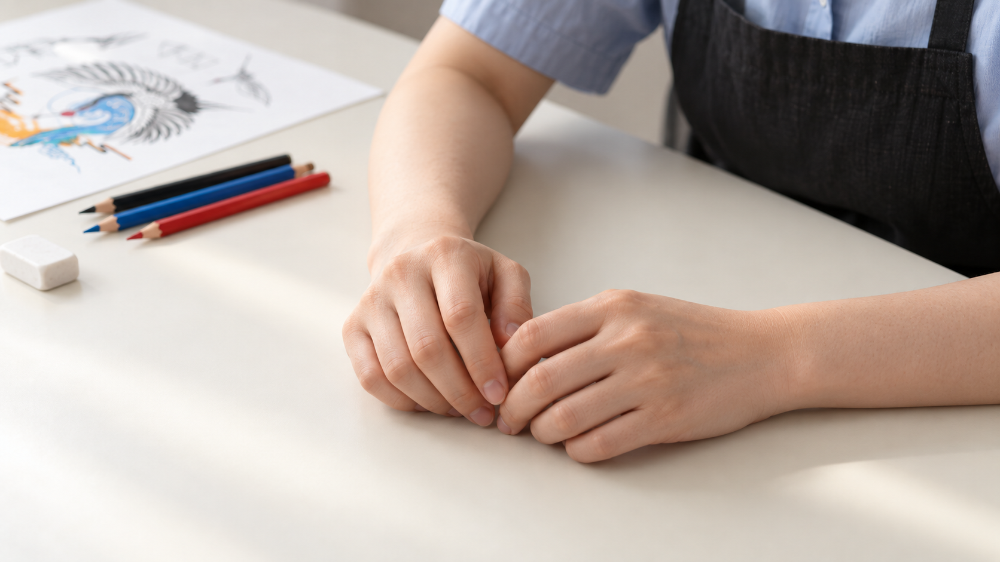
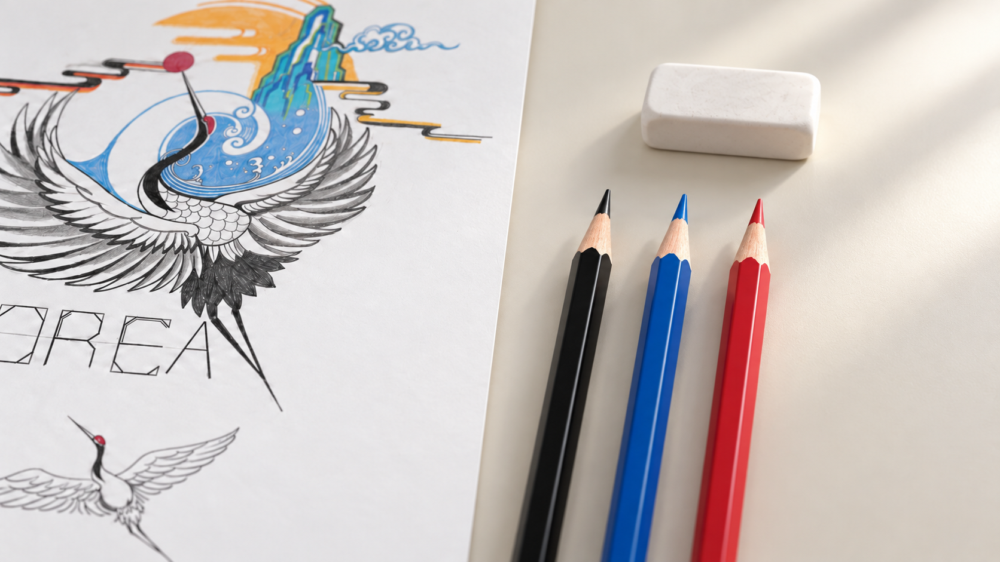
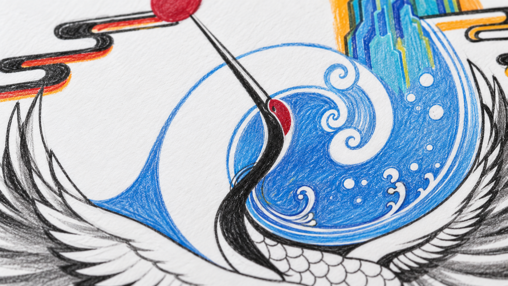
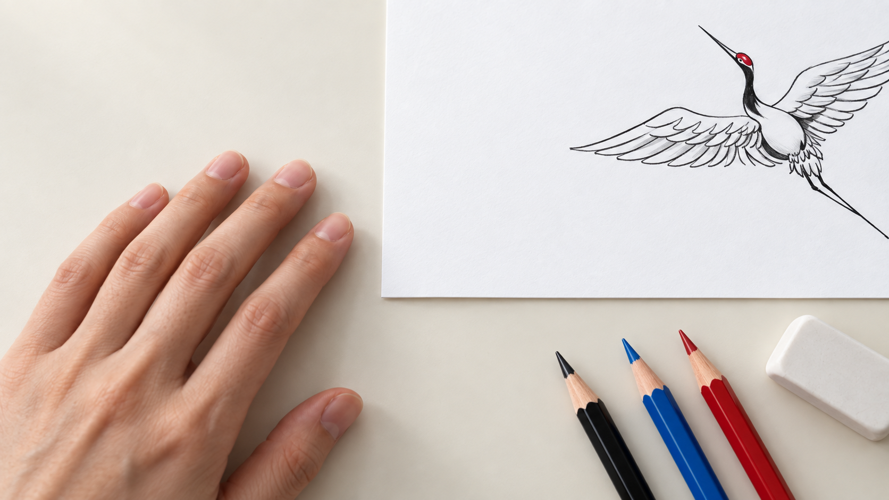

선택 · 적용 완료01 · 파란 색연필 내려놓기사용하던 연필을 놓으며 작업 종료를 전달합니다.구도: 낮은 사선의 손·연필 클로즈업판단: 작업 종료의 의미가 가장 명확합니다. 검정·파랑·빨강 순서와 지우개 위치가 엔딩과 이어집니다. 작품 전체가 보이지 않아 시간 경과를 위한 여백도 생깁니다.검수 메모: 영상 제작 시 손은 작은 놓기 동작만. 연필 굴림·튀어오름·손가락 변형을 확인해야 합니다.
비교안 · 미선택02 · 잠깐 손을 쉬는 순간두 손을 편하게 쉬며 작업 뒤의 여유를 보여줍니다.구도: 책상 높이의 옆면 손 클로즈업판단: 휴식 분위기는 좋지만 작업이 끝났는지 잠시 멈췄는지 의미가 모호합니다.검수 메모: 배경 작품·도구 방향이 기존 컷과 달라 최종 연속 장면으로는 미선택.
비교안 · 미선택03 · 도구의 정물 컷연필과 지우개를 가까이 보여주며 짧은 쉼을 만듭니다.구도: 연필 끝에 초점을 둔 사선 근접판단: 손동작 생성 위험은 적지만, 결과 이미지에서 완성작이 너무 많이 보여 마지막 공개의 효과가 약합니다.검수 메모: 의도했던 빈 종이 가장자리보다 작품 노출이 많음. 아이디어 비교용.
비교안 · 미선택04 · 완성된 파도 디테일완성된 색연필 질감을 먼저 보여준 뒤 작품 전체를 공개합니다.구도: 파도·깃털 극근접판단: 완성작을 단계적으로 보여주기에는 좋지만, 채색 과정과 완성 사이의 시간 경과를 메우는 기능은 1번보다 약합니다.검수 메모: 확대 재현으로 선과 종이결의 차이가 드러남. 최종 작품과 완전히 같은 원본 크롭은 아님.
비교안 · 미선택05 · 종이에서 손을 떼는 순간종이를 누르던 손을 떼며 작품에 시선을 넘깁니다.구도: 종이 하단과 손의 수직 근접판단: 동작이 단순하지만 작업 종료 의미가 1번보다 약하고, 현재 결과의 도구 위치도 엔딩과 다릅니다.검수 메모: 도구가 종이 하단에 추가되어 최종 연결에서는 미선택.